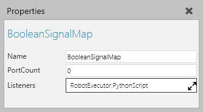

A Boolean Signal Map allows you to map signals to ports in a continuous I/O space.

| Name | Description |
| Name | Defines the name of the signal map. |
| PortCount | Defines the number of ports in the signal map. |
| Listeners | Defines a list of behaviors that use the signal map. Generally, a robot executor uses signal maps to define the robot's IO. |